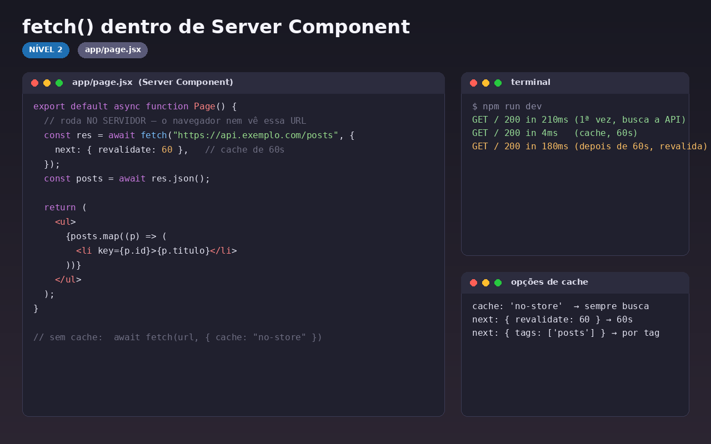

Fetch em Server Component
A Ana 👩💻 descobriu que, no App Router, ela não precisa mais de useEffect para buscar dados. A página dela é um Server Component: a função dela roda no servidor, faz fetch direto, e o navegador recebe só o HTML pronto. O JavaScript da busca nunca vai para o cliente. Nesta página você vai dominar esse fetch no servidor e o cache que vem de brinde.
- Por que Server Component pode ser
asynce darawait fetchdireto - O cache padrão do fetch no Next.js (Data Cache)
cache: "no-store"para dados sempre frescosnext: { revalidate: 60 }enext: { tags: […] }- Dedupe automático: o mesmo fetch em vários componentes chama a API só uma vez
A ideia: a cozinha que busca o ingrediente vs. o garçom que anota o pedido
Num site antigo em React puro, o navegador (o garçom) pedia os dados para a API depois que a página já tinha carregado — por isso você via useEffect, loading… e um segundo de tela piscando. No App Router, quem vai à cozinha buscar o ingrediente é o cozinheiro (o servidor): a página é montada já com os dados na mão, e o garçom só entrega o prato pronto.
E o cardápio? O Next.js estende o fetch padrão com um cache automático: se dez componentes pedirem a mesma URL na mesma renderização, a API só é chamada uma vez (isso se chama request memoization). E entre renderizações, o resultado fica guardado no Data Cache — por padrão, no modo estático, o fetch é cacheado "para sempre" até o próximo build; no modo dinâmico, vale enquanto durar a requisição.
Você controla a validade com duas opções: next: { revalidate: 60 } guarda o resultado por 60 segundos (depois disso, a próxima visita busca de novo em segundo plano), e next: { tags: ["posts"] } dá uma etiqueta para o cache — aí basta chamar revalidateTag("posts") (veremos na próxima página) para invalidar tudo de uma vez. Para dados que nunca podem ficar velhos (ex: saldo bancário), use cache: "no-store".
Buscando dados na página
export default async function Home() {
// roda NO SERVIDOR. A URL da API não aparece no navegador.
const res = await fetch("https://api.exemplo.com/posts", {
next: { revalidate: 60, tags: ["posts"] },
});
if (!res.ok) throw new Error("Falha ao carregar posts");
const posts = await res.json();
return (
<ul>
{posts.map((p) => (
<li key={p.id}>{p.titulo}</li>
))}
</ul>
);
}
As três políticas de cache do fetch
// 1. Cache por 60 segundos + etiqueta "posts"
const res = await fetch(url, { next: { revalidate: 60, tags: ["posts"] } });
// 2. Sempre fresco — nunca guarda em cache (padrão no modo dinâmico)
const res = await fetch(url, { cache: "no-store" });
// 3. Cache "para sempre" até o próximo build (padrão no modo estático)
const res = await fetch(url); // ou { cache: "force-cache" }
Se o fetch falhar, o throw new Error(...) cai direto no error.jsx mais próximo — é por isso que a página de estados especiais existe. E se a resposta for 404, dá para chamar notFound() em vez de tratar na mão.
| Opção | Comportamento | Quando usar |
|---|---|---|
fetch(url) (estático) | cacheia até o próximo build | conteúdo que muda só no deploy (blog, docs) |
{ cache: "no-store" } | sempre busca na API | dados pessoais/em tempo real (saldo, feed logado) |
{ next: { revalidate: 60 } } | guarda 60s; depois revalida em segundo plano | notícias, cotações, listas que mudam aos poucos |
{ next: { tags: ["posts"] } } | cache marcado com etiqueta | junto com revalidateTag("posts") após mutações |
| mesmo fetch em N componentes | API chamada 1x por renderização (memoization) | automático — só funciona dentro do mesmo request |
Missão: a Ana fazia a busca no navegador com useEffect e via "carregando…" piscando. Simule a versão nova: no Server Component os dados já chegam prontos. Complete o componente Post para receber post por prop (sem fetch dentro) e renderizar o título — o App já "busca" os dados antes.
// no servidor (App Router): const posts = await fetch(...).json()
// aqui já chegamos com os dados prontos:
const posts = [
{ id: "1", titulo: "Post já chegou pronto do servidor ✔" },
];
function Post(/* 👉 recebe o post por aqui */) {
// 👉 renderize o título do post recebido
return null;
}
function App() {
return (
<ul>
{posts.map((p) => (
<li key={p.id}><Post post={p} /></li>
))}
</ul>
);
}const posts = [
{ id: "1", titulo: "Post já chegou pronto do servidor ✔" },
];
function Post({ post }) {
return <span>{post.titulo}</span>;
}
function App() {
return (
<ul>
{posts.map((p) => (
<li key={p.id}><Post post={p} /></li>
))}
</ul>
);
}
Quando dá errado
fetch com useEffect dentro de um Server Component — ou confundir os dois mundos:Error: useEffect is not supported in Server Components. You likely forgot "use client" — or the data can be fetched directly in the Server Component with await fetch().
Tradução: useEffect não existe em Server Component. Se a página não precisa de interatividade, faça o fetch direto com await (como nesta página); se precisar dos dois (dados + estado no cliente), busque no servidor e passe o resultado por props para um Client Component filho. Outro erro clássico: fetch numa rota estática sem cache explícito achando que vai ser dinâmico — no modo estático o resultado fica preso até o próximo build.
Exercícios
1. O que faz fetch(url, { next: { revalidate: 60 } })?
2. Para dados que nunca podem ficar em cache (ex: saldo da conta), qual opção usar?
3. Complete: para dar a etiqueta "posts" ao cache de um fetch (para invalidar depois com revalidateTag), qual opção você passa?